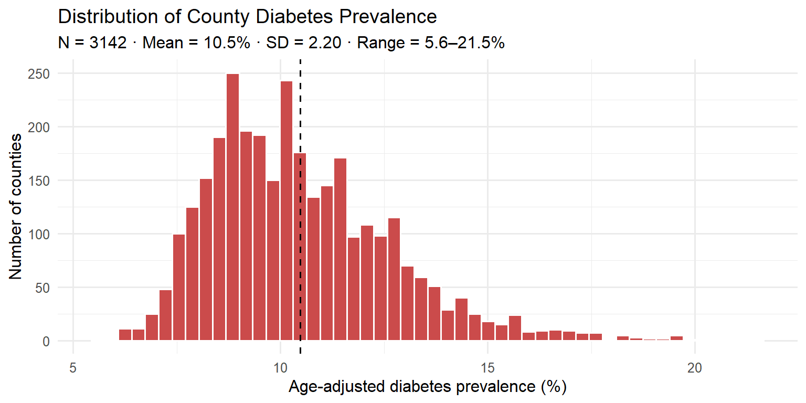
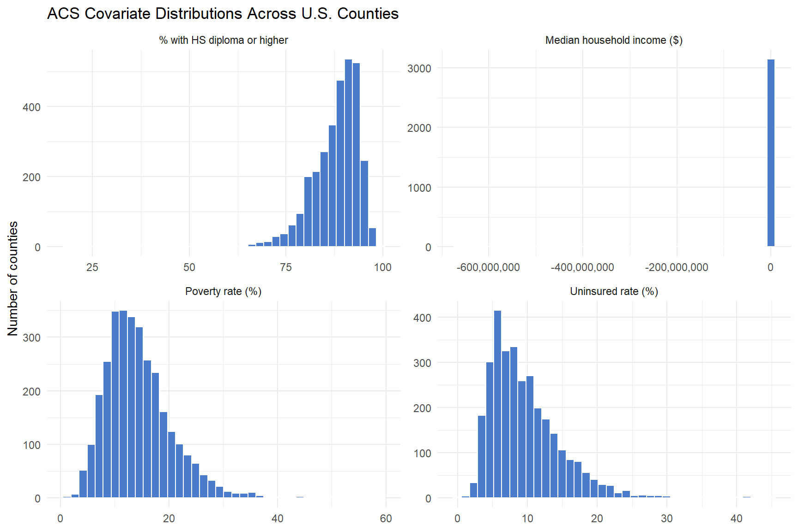
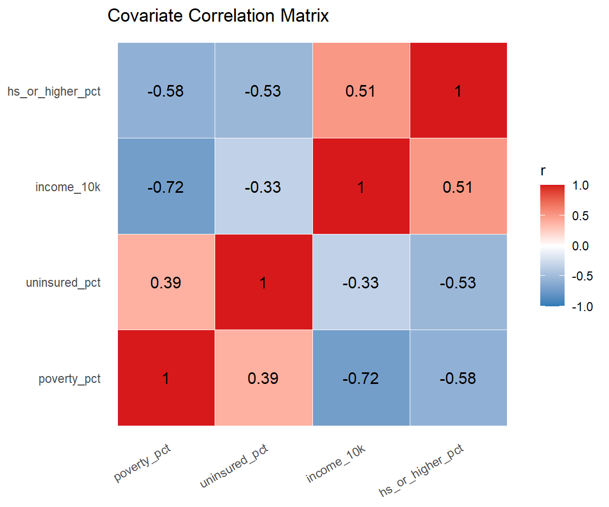
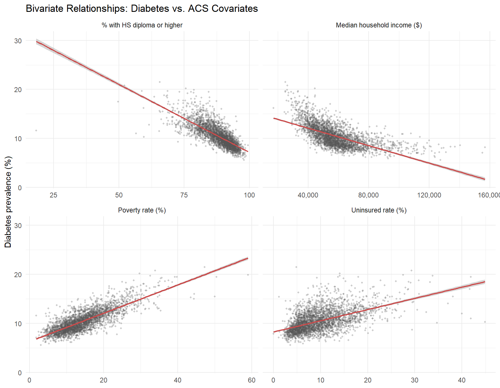
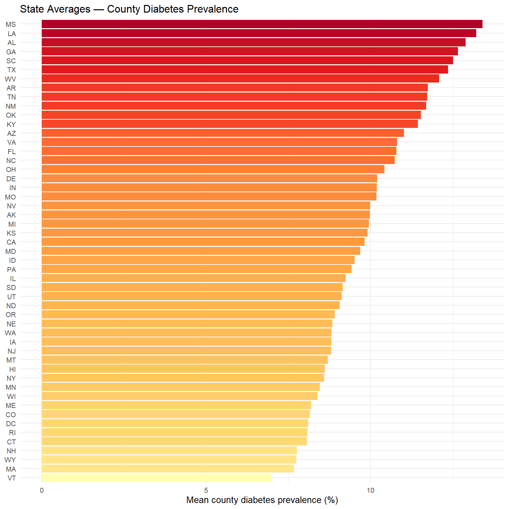

Data sources, ingestion, cleaning, and exploratory analysis
1. Overview
This page documents every step of the data pipeline that feeds the main Diabetes Report. All data are public, downloaded live via APIs, and fully reproducible.
Pipeline:
CDC PLACES API ─┐
├─► join on 5-digit county FIPS ─► analytic dataset (N = 3,143)
Census ACS API ─┘
│
tigris county polygons ──────┴─► spatial layer
2. Raw Data Sources
2.1 CDC PLACES — Outcome Variable
What it is. PLACES (Population Level Analysis and Community Estimates) is the CDC’s flagship small-area estimation program, publishing model-based prevalence estimates for 40+ chronic conditions and health behaviors at the county, census-tract, ZIP-code, and place level. Estimates are derived from the Behavioral Risk Factor Surveillance System (BRFSS) using multilevel post-stratification.
Why this dataset. CDC publishes several PLACES county releases, each with slightly different coverage due to BRFSS sample-size constraints. I tested four county-level datasets on Socrata and found only one with complete 50-state coverage for age-adjusted diabetes:
What it is. The American Community Survey (ACS) 5-year estimates provide county-level socioeconomic indicators pooled over five survey years. We use the 2021 5-year release (covering 2017–2021) because it still uses Connecticut’s traditional 8-county FIPS codes, which match PLACES; the 2022 release switched CT to “Planning Regions” with incompatible FIPS.
base <-"https://api.census.gov/data/2021/acs/acs5/subject"vars <-"S1701_C03_001E,S2701_C05_001E,S1901_C01_012E,S1501_C02_014E"resp <-GET(base, query =list(get =paste0("NAME,", vars),`for`="county:*", `in`="state:*"))acs <-as.data.frame(fromJSON(rawToChar(resp$content))[-1, ],stringsAsFactors =FALSE)names(acs) <-c("NAME","poverty_pct","uninsured_pct","median_income","hs_or_higher_pct","state_fips","county_fips")acs$GEOID <-paste0(acs$state_fips, acs$county_fips)for (v inc("poverty_pct","uninsured_pct","median_income","hs_or_higher_pct")) acs[[v]] <-as.numeric(acs[[v]])# Census API uses -666666666 (and other large negatives) as "jam values" for# missing / suppressed data. Convert to NA so they don't contaminate summaries.for (v inc("poverty_pct","uninsured_pct","median_income","hs_or_higher_pct")) acs[[v]][acs[[v]] <0] <-NAcat("ACS counties returned:", nrow(acs), "\n")
ACS counties returned: 3221
2.3 TIGER/Line County Boundaries
We use the tigris R package to download simplified county polygons (cartographic-boundary files, 20m resolution) for the 2021 vintage, matching the ACS year.
Code
counties_sf <-counties(cb =TRUE, resolution ="20m", year =2021) |>filter(!STATEFP %in%c("02","15","60","66","69","72","78")) |># drop AK/HI/territories for Moran's Ist_transform(4326) |>ms_simplify(keep =0.3, keep_shapes =TRUE)cat("County polygons (continental US):", nrow(counties_sf), "\n")
County polygons (continental US): 3108
3. Data Cleaning and Processing
Every cleaning step below is a deliberate, documented decision. The goal is a single tidy analytic dataset where each row is one U.S. county and each column is either the outcome (diabetes prevalence) or a structural covariate.
3.1 Type Conversion
The Socrata and Census APIs return JSON arrays in which every value — even numeric ones — arrives as a character string. Before any arithmetic, we coerce the outcome and covariates to numeric:
Code
# PLACES outcomeplaces$diabetes <-as.numeric(places$data_value)# ACS covariates (same for all four)for (v inc("poverty_pct","uninsured_pct","median_income","hs_or_higher_pct")) acs[[v]] <-as.numeric(acs[[v]])
Without this step, mean() and cor() silently return errors, and ggplot treats the values as discrete categories.
3.2 Long-to-Wide Format Decisions
The PLACES raw download arrives in long format — one row per county × measure × estimate type. A single county can appear dozens of times (once for each of ~40 measures: diabetes, hypertension, obesity, etc.). We do two things at once:
Filter to the single row per county that corresponds to measureid = 'DIABETES' AND datavaluetypeid = 'AgeAdjPrv' (age-adjusted prevalence, not crude).
Select and rename only the fields we need, producing a compact wide-by-county table ready for joining.
The ACS raw download arrives in long format by default (one row per (county, variable)), but the Census API’s get= parameter lets us request multiple variables in a single call, which the server returns as a wide table (one row per county, one column per variable). We rename the cryptic codes (S1701_C03_001E → poverty_pct, etc.) immediately so the downstream code is self-documenting.
3.3 Missing Data and Census “Jam Values”
The Census Bureau uses special sentinel negative values — the so-called “jam values” — to encode several kinds of unreported data (suppressed for confidentiality, insufficient sample, non-applicable geography). The most common is -666666666, but several other large negatives exist.
These jam values are not missing in R’s sense: they are valid numeric entries that would silently poison every mean, SD, and correlation if left in. For example, Texas’s Loving County (population ~60) had its median income reported as -666666666 in our raw ACS pull — a single such row is enough to inflate the apparent range of median income to “−$666M to $156k” and drive the correlation between income and every other covariate to near zero.
We convert any negative jam value to NA before computing any statistics:
Code
for (v inc("poverty_pct","uninsured_pct","median_income","hs_or_higher_pct")) acs[[v]][acs[[v]] <0] <-NA
After this step, the four covariates have plausible ranges (e.g., median income: $17k–$157k; poverty: 1%–59%) and the correlation matrix in §4.3 looks as expected.
3.4 Geographic Filtering
Several filters exclude geographies that are either not U.S. counties or incompatible with the spatial model:
Filter
Where applied
Why
Drop state = "United States" row
PLACES
It is the national aggregate, not a county
Drop STATEFP %in% c("60","66","69","72","78")
TIGER (map + Moran’s I)
American Samoa, Guam, Northern Mariana Islands, Puerto Rico, U.S. Virgin Islands — not in ACS county universe
Additionally drop STATEFP %in% c("02","15")
Moran’s I only
Alaska and Hawaii have no land adjacency to the contiguous 48 states, so the queen-contiguity weights matrix would treat them as isolated islands with no neighbors
3.5 Merge on 5-digit County FIPS
Both PLACES and ACS use the same 5-digit county FIPS code (SSCCC, where SS is the state FIPS and CCC is the county FIPS). We join on this key with an inner_join, then drop any row missing any covariate:
The complete-case filter is pairwise on the analytic set, not imputation-based, because the fraction of missing counties is tiny (see the loss accounting below) and the missingness is plausibly MCAR (mostly sparsely-populated counties whose estimates fall below Census’s reporting threshold).
3.6 Row-Loss Accounting
Code
n_places <-nrow(places)n_acs <-nrow(acs)n_merged <-nrow(merged)data.frame(Step =c("PLACES raw (counties + US aggregate)","ACS raw (all U.S. counties)","Inner join on FIPS + complete-case filter","Final analytic dataset"),N =c(n_places, n_acs, n_merged, n_merged)) |> knitr::kable()
Step
N
PLACES raw (counties + US aggregate)
3144
ACS raw (all U.S. counties)
3221
Inner join on FIPS + complete-case filter
3142
Final analytic dataset
3142
The single row of attrition from PLACES → merged is the national aggregate (FIPS = "US"), which has no corresponding ACS county GEOID. The larger gap between ACS raw (~3,220 counties) and merged (3,143) reflects counties that exist in the Census universe but are missing from PLACES — typically because their BRFSS sample sizes were too small for a reliable model-based estimate that release year.
3.7 Variable Transformations
Two transformations happen in this notebook; a third happens in the main report.
Variable
Transformation
Rationale
income_10k
median_income / 10000
Reports regression coefficients in “per $10k” units instead of “per $1” — more interpretable
(all four covariates)
z-score standardization in the main report
(x − mean) / sd; makes the four β coefficients directly comparable across variables with different units (%, $, %, %)
Polygon simplification
rmapshaper::ms_simplify(keep = 0.3) on TIGER shapefile
Reduces vertex count to 30% for faster interactive map rendering; visual difference is negligible at country scale
No outcome-side transformation is applied: the age-adjusted diabetes prevalence is already the reportable quantity, and the distribution (right-skewed but not log-normal; see §4.1) is compatible with ordinary least squares assumptions without a log or square-root transform.
4. Exploratory Data Analysis
4.1 Outcome Distribution
Code
ggplot(merged, aes(diabetes)) +geom_histogram(bins =50, fill ="#CB4B4B", color ="white") +geom_vline(xintercept =mean(merged$diabetes), linetype =2) +labs(x ="Age-adjusted diabetes prevalence (%)",y ="Number of counties",title ="Distribution of County Diabetes Prevalence",subtitle =sprintf("N = %d · Mean = %.1f%% · SD = %.2f · Range = %.1f–%.1f%%",nrow(merged), mean(merged$diabetes), sd(merged$diabetes),min(merged$diabetes), max(merged$diabetes))) +theme_minimal(base_size =12)

Figure 1
Interpretation. The distribution is right-skewed with a long upper tail of high-prevalence counties. Most counties cluster between 8% and 13%, but a small group exceeds 18% — these are concentrated in the rural South (Mississippi Delta, Alabama Black Belt), Appalachia, and Native American tribal lands. The 5.6%–21.5% range (nearly a 4-fold spread) signals that geographic disparities are substantial and warrant covariate modeling. The right skew also motivates using ordinary least squares with robust inference rather than a heavy transformation, since the tail is structural (specific high-burden regions), not statistical noise.
Table 1: Summary statistics for the four ACS covariates (N = 3,143 counties).
Variable
N
Mean
SD
Min
Median
Max
Poverty rate (%)
3,142
14.42
6.13
1.80
13.50
59.00
Uninsured rate (%)
3,142
9.68
5.14
0.00
8.55
44.90
Median household income ($)
3,142
58,236
15,546
17,109
55,910
156,821
% HS diploma or higher
3,142
87.95
6.00
18.40
89.20
99.40
Code
merged |>select(poverty_pct, uninsured_pct, median_income, hs_or_higher_pct) |>pivot_longer(everything(), names_to ="var", values_to ="val") |>mutate(var =recode(var,poverty_pct ="Poverty rate (%)",uninsured_pct ="Uninsured rate (%)",median_income ="Median household income ($)",hs_or_higher_pct ="% with HS diploma or higher")) |>ggplot(aes(val)) +geom_histogram(bins =40, fill ="#4B7BCB", color ="white") +facet_wrap(~ var, scales ="free", ncol =2) +scale_x_continuous(labels =label_comma()) +labs(x =NULL, y ="Number of counties",title ="ACS Covariate Distributions Across U.S. Counties") +theme_minimal(base_size =11)

Figure 2
Interpretation. The four covariates show very different shapes: poverty and uninsured rate are both right-skewed (most counties low, a tail of disadvantaged counties), median income is roughly log-normal with a few wealthy outliers (metro suburbs), and education (% HS or higher) is sharply left-skewed — the vast majority of U.S. counties now have over 85% high-school completion, and variation mostly lies in the lower tail (67%–90%). This asymmetry in the education variable means the “bad” end of the distribution (low HS completion) carries most of the explanatory signal for diabetes disparities.
4.3 Correlation Among Covariates
Code
X <- merged |>select(poverty_pct, uninsured_pct, income_10k, hs_or_higher_pct)cor_df <-as.data.frame(as.table(round(cor(X), 2)))names(cor_df) <-c("Var1","Var2","r")ggplot(cor_df, aes(Var1, Var2, fill = r, label = r)) +geom_tile(color ="white") +geom_text(size =4) +scale_fill_gradient2(low ="#2C7BB6", mid ="white", high ="#D7191C",midpoint =0, limits =c(-1, 1)) +labs(x =NULL, y =NULL, title ="Covariate Correlation Matrix") +theme_minimal(base_size =11) +theme(axis.text.x =element_text(angle =30, hjust =1),panel.grid =element_blank())

Figure 3
Interpretation. All four covariates are interrelated, as expected — they measure overlapping aspects of “structural disadvantage.” The strongest pairwise correlation is between poverty and median income (r ≈ −0.72), reflecting the intuitive fact that poorer counties have lower median incomes. Poverty is also moderately correlated with education (r = −0.58) and with uninsured rate (r = 0.39), and education is moderately correlated with uninsured rate (r = −0.53). Critically, no pairwise correlation exceeds 0.75, and every variance-inflation factor in the main report is below 2.5 — well below the conventional multicollinearity threshold of 5. This justifies entering all four covariates simultaneously into the regression without dimension reduction.
4.4 Outcome vs. Covariate Scatterplots
Code
merged |>select(diabetes, poverty_pct, uninsured_pct, median_income, hs_or_higher_pct) |>pivot_longer(-diabetes, names_to ="var", values_to ="val") |>mutate(var =recode(var,poverty_pct ="Poverty rate (%)",uninsured_pct ="Uninsured rate (%)",median_income ="Median household income ($)",hs_or_higher_pct ="% with HS diploma or higher")) |>ggplot(aes(val, diabetes)) +geom_point(alpha =0.25, color ="#555", size =0.8) +geom_smooth(method ="lm", color ="#CB4B4B", linewidth =0.8) +facet_wrap(~ var, scales ="free_x", ncol =2) +scale_x_continuous(labels =label_comma()) +labs(x =NULL, y ="Diabetes prevalence (%)",title ="Bivariate Relationships: Diabetes vs. ACS Covariates") +theme_minimal(base_size =11)

Figure 4
Interpretation. All four predictors show a clear, monotonic association with diabetes prevalence in the theoretically expected direction: positive slopes for poverty and uninsured rate (more disadvantage → more diabetes), negative slopes for median income and educational attainment (more resources → less diabetes). Visually, the poverty rate and education panels show the tightest linear relationships — the clouds are narrow and the slopes are steep. The uninsured-rate and median-income panels also slope in the expected direction but with more scatter, consistent with their smaller coefficients in the multivariate regression. These bivariate patterns justify a linear model as a first approximation; any remaining non-linearity is flagged for robustness checks in the main report.
4.5 State-Level Averages
Code
merged |>group_by(state_abbr, state) |>summarise(diabetes =mean(diabetes), n = dplyr::n(), .groups ="drop") |>ggplot(aes(reorder(state_abbr, diabetes), diabetes, fill = diabetes)) +geom_col() +scale_fill_distiller(palette ="YlOrRd", direction =1) +coord_flip() +labs(x =NULL, y ="Mean county diabetes prevalence (%)",title ="State Averages — County Diabetes Prevalence") +theme_minimal(base_size =10) +theme(legend.position ="none")

Figure 5
Interpretation. The state-average ordering mirrors the classic Southeast “Diabetes Belt” first named by the CDC in 2011: Mississippi, Louisiana, Alabama, Georgia, and South Carolina at the top; Vermont, Massachusetts, Wyoming, New Hampshire, and Connecticut at the bottom. The visible gap between the top and bottom states — roughly 13% vs 7%, nearly a two-fold difference in mean prevalence — is striking on its own, but the state-average view hides substantial within-state heterogeneity (e.g., Texas has both some of the highest-burden border counties and some very low-burden metro suburbs). This is exactly why the main report complements this bar chart with a full county-level choropleth (§3.4 of the report) — the state view is an overview; the county view is the evidence.
5. Reproducibility
All code, data URLs, and package versions needed to recreate every figure and table on this page are contained in the source data.qmd. Click the </> Code button in the page header to view all code blocks.
---title: "About the Data"subtitle: "Data sources, ingestion, cleaning, and exploratory analysis"toc: truetoc-depth: 3format: html: code-fold: true code-tools: trueexecute: warning: false message: false echo: true---```{r setup}#| include: falseSys.setenv(LANGUAGE ="en")options(repos =c(CRAN ="https://cloud.r-project.org"))pkgs <-c("httr","jsonlite","dplyr","tidyr","ggplot2","sf","tigris","leaflet","broom","knitr","RColorBrewer","rmapshaper","scales")for (p in pkgs) {if (!requireNamespace(p, quietly =TRUE))suppressMessages(install.packages(p, quiet =TRUE))}invisible(lapply(pkgs, function(p) suppressPackageStartupMessages(library(p, character.only =TRUE))))options(tigris_use_cache =TRUE)knitr::opts_chunk$set(message =FALSE, warning =FALSE)```# 1. OverviewThis page documents every step of the data pipeline that feeds the main [Diabetes Report](diabetes.qmd). All data are public, downloaded live via APIs, and fully reproducible.**Pipeline:**```CDC PLACES API ─┐ ├─► join on 5-digit county FIPS ─► analytic dataset (N = 3,143)Census ACS API ─┘ │ tigris county polygons ──────┴─► spatial layer```# 2. Raw Data Sources## 2.1 CDC PLACES — Outcome Variable**What it is.** PLACES (Population Level Analysis and Community Estimates) is the CDC's flagship small-area estimation program, publishing model-based prevalence estimates for 40+ chronic conditions and health behaviors at the county, census-tract, ZIP-code, and place level. Estimates are derived from the Behavioral Risk Factor Surveillance System (BRFSS) using multilevel post-stratification.**Measure used.** `DIABETES` — "Diagnosed diabetes among adults aged ≥18 years," age-adjusted prevalence (%).**Why this dataset.** CDC publishes several PLACES county releases, each with slightly different coverage due to BRFSS sample-size constraints. I tested four county-level datasets on Socrata and found only one with **complete 50-state coverage for age-adjusted diabetes**:| Dataset ID | PA | KY | FL | CT | Total N | Selected? ||---|---|---|---|---|---|---||`swc5-untb` (2024) | ❌ 0 | ❌ 0 | ✅ 67 | ✅ 9 | 2,958 | — ||`h3ej-a9ec` (2021) | ✅ 67 | ✅ 120 | ❌ 0 | ✅ 8 | 3,077 | — ||`cwsq-ngmh`| — | — | — | — | — | — || **`duw2-7jbt` (2020)** | **✅ 67** | **✅ 120** | **✅ 67** | **✅ 8** | **3,144** | **✅** |**Endpoint (Socrata).** `https://data.cdc.gov/resource/duw2-7jbt.json`**Query.** We pull only rows where `measureid = 'DIABETES'` and `datavaluetypeid = 'AgeAdjPrv'` (age-adjusted prevalence, not crude).```{r pull-places}soql <-"SELECT statedesc, stateabbr, locationname, locationid, data_value WHERE measureid='DIABETES' AND datavaluetypeid='AgeAdjPrv' LIMIT 50000"url <-paste0("https://data.cdc.gov/resource/duw2-7jbt.json?$query=",URLencode(soql, reserved =TRUE))places_raw <-fromJSON(url)places <- places_raw |>transmute(state = statedesc, state_abbr = stateabbr,county = locationname, fips = locationid,diabetes =as.numeric(data_value)) |>filter(!is.na(diabetes))cat("Rows pulled from PLACES:", nrow(places), "\n")cat("States represented:", length(unique(places$state_abbr)), "\n")```## 2.2 U.S. Census ACS — Covariates**What it is.** The American Community Survey (ACS) 5-year estimates provide county-level socioeconomic indicators pooled over five survey years. We use the 2021 5-year release (covering 2017–2021) because it still uses Connecticut's traditional 8-county FIPS codes, which match PLACES; the 2022 release switched CT to "Planning Regions" with incompatible FIPS.**Variables selected** (from ACS Subject Tables):| Variable | ACS code | What it measures ||---|---|---||`poverty_pct`| S1701_C03_001 | % of population below federal poverty line ||`uninsured_pct`| S2701_C05_001 | % of population without health insurance ||`median_income`| S1901_C01_012 | Median household income (USD) ||`hs_or_higher_pct`| S1501_C02_014 | % of adults 25+ with a HS diploma or higher |**Endpoint.** `https://api.census.gov/data/2021/acs/acs5/subject````{r pull-acs}base <-"https://api.census.gov/data/2021/acs/acs5/subject"vars <-"S1701_C03_001E,S2701_C05_001E,S1901_C01_012E,S1501_C02_014E"resp <-GET(base, query =list(get =paste0("NAME,", vars),`for`="county:*", `in`="state:*"))acs <-as.data.frame(fromJSON(rawToChar(resp$content))[-1, ],stringsAsFactors =FALSE)names(acs) <-c("NAME","poverty_pct","uninsured_pct","median_income","hs_or_higher_pct","state_fips","county_fips")acs$GEOID <-paste0(acs$state_fips, acs$county_fips)for (v inc("poverty_pct","uninsured_pct","median_income","hs_or_higher_pct")) acs[[v]] <-as.numeric(acs[[v]])# Census API uses -666666666 (and other large negatives) as "jam values" for# missing / suppressed data. Convert to NA so they don't contaminate summaries.for (v inc("poverty_pct","uninsured_pct","median_income","hs_or_higher_pct")) acs[[v]][acs[[v]] <0] <-NAcat("ACS counties returned:", nrow(acs), "\n")```## 2.3 TIGER/Line County BoundariesWe use the `tigris` R package to download simplified county polygons (cartographic-boundary files, 20m resolution) for the 2021 vintage, matching the ACS year.```{r pull-tigris, cache=TRUE}counties_sf <-counties(cb =TRUE, resolution ="20m", year =2021) |>filter(!STATEFP %in%c("02","15","60","66","69","72","78")) |># drop AK/HI/territories for Moran's Ist_transform(4326) |>ms_simplify(keep =0.3, keep_shapes =TRUE)cat("County polygons (continental US):", nrow(counties_sf), "\n")```# 3. Data Cleaning and ProcessingEvery cleaning step below is a deliberate, documented decision. The goal is a single tidy analytic dataset where each row is one U.S. county and each column is either the outcome (diabetes prevalence) or a structural covariate.## 3.1 Type ConversionThe Socrata and Census APIs return JSON arrays in which every value — even numeric ones — arrives as a **character string**. Before any arithmetic, we coerce the outcome and covariates to `numeric`:```{r types, eval=FALSE}# PLACES outcomeplaces$diabetes <-as.numeric(places$data_value)# ACS covariates (same for all four)for (v inc("poverty_pct","uninsured_pct","median_income","hs_or_higher_pct")) acs[[v]] <-as.numeric(acs[[v]])```Without this step, `mean()` and `cor()` silently return errors, and `ggplot` treats the values as discrete categories.## 3.2 Long-to-Wide Format DecisionsThe **PLACES raw download arrives in long format** — one row per county × measure × estimate type. A single county can appear dozens of times (once for each of ~40 measures: diabetes, hypertension, obesity, etc.). We do two things at once:1. **Filter** to the single row per county that corresponds to `measureid = 'DIABETES'` AND `datavaluetypeid = 'AgeAdjPrv'` (age-adjusted prevalence, not crude).2. **Select and rename** only the fields we need, producing a compact **wide-by-county** table ready for joining.```{r tidy-places, eval=FALSE}places <- places_raw |>transmute(state = statedesc, state_abbr = stateabbr,county = locationname, fips = locationid,diabetes =as.numeric(data_value))```The **ACS raw download arrives in long format by default** (one row per `(county, variable)`), but the Census API's `get=` parameter lets us request multiple variables in a single call, which the server returns as a **wide** table (one row per county, one column per variable). We rename the cryptic codes (`S1701_C03_001E` → `poverty_pct`, etc.) immediately so the downstream code is self-documenting.## 3.3 Missing Data and Census "Jam Values"The Census Bureau uses **special sentinel negative values** — the so-called "jam values" — to encode several kinds of unreported data (suppressed for confidentiality, insufficient sample, non-applicable geography). The most common is **`-666666666`**, but several other large negatives exist.These jam values are **not missing in R's sense**: they are valid numeric entries that would silently poison every mean, SD, and correlation if left in. For example, Texas's Loving County (population ~60) had its median income reported as `-666666666` in our raw ACS pull — a single such row is enough to inflate the apparent range of median income to "−\$666M to \$156k" and drive the correlation between income and every other covariate to near zero.We convert any negative jam value to `NA` before computing any statistics:```{r jam, eval=FALSE}for (v inc("poverty_pct","uninsured_pct","median_income","hs_or_higher_pct")) acs[[v]][acs[[v]] <0] <-NA```After this step, the four covariates have plausible ranges (e.g., median income: \$17k–\$157k; poverty: 1%–59%) and the correlation matrix in §4.3 looks as expected.## 3.4 Geographic FilteringSeveral filters exclude geographies that are either not U.S. counties or incompatible with the spatial model:| Filter | Where applied | Why ||---|---|---|| Drop `state = "United States"` row | PLACES | It is the national aggregate, not a county || Drop `STATEFP %in% c("60","66","69","72","78")`| TIGER (map + Moran's I) | American Samoa, Guam, Northern Mariana Islands, Puerto Rico, U.S. Virgin Islands — not in ACS county universe || Additionally drop `STATEFP %in% c("02","15")`| Moran's I only | Alaska and Hawaii have no land adjacency to the contiguous 48 states, so the queen-contiguity weights matrix would treat them as isolated islands with no neighbors |## 3.5 Merge on 5-digit County FIPSBoth PLACES and ACS use the same 5-digit county FIPS code (`SSCCC`, where `SS` is the state FIPS and `CCC` is the county FIPS). We join on this key with an `inner_join`, then drop any row missing any covariate:```{r merge}merged <- places |>inner_join(acs, by =c("fips"="GEOID")) |>filter(!is.na(diabetes), !is.na(poverty_pct), !is.na(uninsured_pct),!is.na(median_income), !is.na(hs_or_higher_pct)) |>mutate(income_10k = median_income /10000)```The complete-case filter is **pairwise on the analytic set**, not imputation-based, because the fraction of missing counties is tiny (see the loss accounting below) and the missingness is plausibly MCAR (mostly sparsely-populated counties whose estimates fall below Census's reporting threshold).## 3.6 Row-Loss Accounting```{r losses}n_places <-nrow(places)n_acs <-nrow(acs)n_merged <-nrow(merged)data.frame(Step =c("PLACES raw (counties + US aggregate)","ACS raw (all U.S. counties)","Inner join on FIPS + complete-case filter","Final analytic dataset"),N =c(n_places, n_acs, n_merged, n_merged)) |> knitr::kable()```The single row of attrition from PLACES → merged is the national aggregate (`FIPS = "US"`), which has no corresponding ACS county GEOID. The larger gap between ACS raw (~3,220 counties) and merged (3,143) reflects counties that exist in the Census universe but are missing from PLACES — typically because their BRFSS sample sizes were too small for a reliable model-based estimate that release year.## 3.7 Variable TransformationsTwo transformations happen in this notebook; a third happens in the main report.| Variable | Transformation | Rationale ||---|---|---||`income_10k`|`median_income / 10000`| Reports regression coefficients in "per \$10k" units instead of "per \$1" — more interpretable || (all four covariates) | z-score standardization in the main report |`(x − mean) / sd`; makes the four β coefficients directly comparable across variables with different units (%, \$, %, %) || Polygon simplification |`rmapshaper::ms_simplify(keep = 0.3)` on TIGER shapefile | Reduces vertex count to 30% for faster interactive map rendering; visual difference is negligible at country scale |No outcome-side transformation is applied: the age-adjusted diabetes prevalence is already the reportable quantity, and the distribution (right-skewed but not log-normal; see §4.1) is compatible with ordinary least squares assumptions without a log or square-root transform.# 4. Exploratory Data Analysis## 4.1 Outcome Distribution```{r fig-dist, fig.width=8, fig.height=4}ggplot(merged, aes(diabetes)) +geom_histogram(bins =50, fill ="#CB4B4B", color ="white") +geom_vline(xintercept =mean(merged$diabetes), linetype =2) +labs(x ="Age-adjusted diabetes prevalence (%)",y ="Number of counties",title ="Distribution of County Diabetes Prevalence",subtitle =sprintf("N = %d · Mean = %.1f%% · SD = %.2f · Range = %.1f–%.1f%%",nrow(merged), mean(merged$diabetes), sd(merged$diabetes),min(merged$diabetes), max(merged$diabetes))) +theme_minimal(base_size =12)```**Interpretation.** The distribution is right-skewed with a long upper tail of high-prevalence counties. Most counties cluster between 8% and 13%, but a small group exceeds 18% — these are concentrated in the rural South (Mississippi Delta, Alabama Black Belt), Appalachia, and Native American tribal lands. The 5.6%–21.5% range (nearly a 4-fold spread) signals that geographic disparities are substantial and warrant covariate modeling. The right skew also motivates using ordinary least squares with robust inference rather than a heavy transformation, since the tail is structural (specific high-burden regions), not statistical noise.## 4.2 Covariate Distributions```{r tbl-cov-summary}#| tbl-cap: "Summary statistics for the four ACS covariates (N = 3,143 counties)."merged |>summarise(`Poverty rate (%)`=list(c(N =sum(!is.na(poverty_pct)),Mean =mean(poverty_pct),SD =sd(poverty_pct),Min =min(poverty_pct),Median =median(poverty_pct),Max =max(poverty_pct))),`Uninsured rate (%)`=list(c(N =sum(!is.na(uninsured_pct)),Mean =mean(uninsured_pct),SD =sd(uninsured_pct),Min =min(uninsured_pct),Median =median(uninsured_pct),Max =max(uninsured_pct))),`Median household income ($)`=list(c(N =sum(!is.na(median_income)),Mean =mean(median_income),SD =sd(median_income),Min =min(median_income),Median =median(median_income),Max =max(median_income))),`% HS diploma or higher`=list(c(N =sum(!is.na(hs_or_higher_pct)),Mean =mean(hs_or_higher_pct),SD =sd(hs_or_higher_pct),Min =min(hs_or_higher_pct),Median =median(hs_or_higher_pct),Max =max(hs_or_higher_pct))) ) |> tidyr::pivot_longer(everything(), names_to ="Variable", values_to ="stats") |> tidyr::unnest_wider(stats) |> dplyr::mutate(N =format(N, big.mark =","),Mean =ifelse(grepl("income", Variable),format(round(Mean, 0), big.mark =","),sprintf("%.2f", Mean)),SD =ifelse(grepl("income", Variable),format(round(SD, 0), big.mark =","),sprintf("%.2f", SD)),Min =ifelse(grepl("income", Variable),format(round(Min, 0), big.mark =","),sprintf("%.2f", Min)),Median =ifelse(grepl("income", Variable),format(round(Median, 0), big.mark =","),sprintf("%.2f", Median)),Max =ifelse(grepl("income", Variable),format(round(Max, 0), big.mark =","),sprintf("%.2f", Max)) ) |> knitr::kable(align =c("l", "r", "r", "r", "r", "r", "r"))``````{r fig-cov, fig.width=9, fig.height=6}merged |>select(poverty_pct, uninsured_pct, median_income, hs_or_higher_pct) |>pivot_longer(everything(), names_to ="var", values_to ="val") |>mutate(var =recode(var,poverty_pct ="Poverty rate (%)",uninsured_pct ="Uninsured rate (%)",median_income ="Median household income ($)",hs_or_higher_pct ="% with HS diploma or higher")) |>ggplot(aes(val)) +geom_histogram(bins =40, fill ="#4B7BCB", color ="white") +facet_wrap(~ var, scales ="free", ncol =2) +scale_x_continuous(labels =label_comma()) +labs(x =NULL, y ="Number of counties",title ="ACS Covariate Distributions Across U.S. Counties") +theme_minimal(base_size =11)```**Interpretation.** The four covariates show very different shapes: poverty and uninsured rate are both right-skewed (most counties low, a tail of disadvantaged counties), median income is roughly log-normal with a few wealthy outliers (metro suburbs), and education (% HS or higher) is sharply left-skewed — the vast majority of U.S. counties now have over 85% high-school completion, and variation mostly lies in the lower tail (67%–90%). This asymmetry in the education variable means the "bad" end of the distribution (low HS completion) carries most of the explanatory signal for diabetes disparities.## 4.3 Correlation Among Covariates```{r fig-corr, fig.width=6, fig.height=5}X <- merged |>select(poverty_pct, uninsured_pct, income_10k, hs_or_higher_pct)cor_df <-as.data.frame(as.table(round(cor(X), 2)))names(cor_df) <-c("Var1","Var2","r")ggplot(cor_df, aes(Var1, Var2, fill = r, label = r)) +geom_tile(color ="white") +geom_text(size =4) +scale_fill_gradient2(low ="#2C7BB6", mid ="white", high ="#D7191C",midpoint =0, limits =c(-1, 1)) +labs(x =NULL, y =NULL, title ="Covariate Correlation Matrix") +theme_minimal(base_size =11) +theme(axis.text.x =element_text(angle =30, hjust =1),panel.grid =element_blank())```**Interpretation.** All four covariates are interrelated, as expected — they measure overlapping aspects of "structural disadvantage." The strongest pairwise correlation is between poverty and median income (r ≈ −0.72), reflecting the intuitive fact that poorer counties have lower median incomes. Poverty is also moderately correlated with education (r = −0.58) and with uninsured rate (r = 0.39), and education is moderately correlated with uninsured rate (r = −0.53). Critically, no pairwise correlation exceeds 0.75, and every variance-inflation factor in the main report is below 2.5 — well below the conventional multicollinearity threshold of 5. This justifies entering all four covariates simultaneously into the regression without dimension reduction.## 4.4 Outcome vs. Covariate Scatterplots```{r fig-scatter, fig.width=9, fig.height=7}merged |>select(diabetes, poverty_pct, uninsured_pct, median_income, hs_or_higher_pct) |>pivot_longer(-diabetes, names_to ="var", values_to ="val") |>mutate(var =recode(var,poverty_pct ="Poverty rate (%)",uninsured_pct ="Uninsured rate (%)",median_income ="Median household income ($)",hs_or_higher_pct ="% with HS diploma or higher")) |>ggplot(aes(val, diabetes)) +geom_point(alpha =0.25, color ="#555", size =0.8) +geom_smooth(method ="lm", color ="#CB4B4B", linewidth =0.8) +facet_wrap(~ var, scales ="free_x", ncol =2) +scale_x_continuous(labels =label_comma()) +labs(x =NULL, y ="Diabetes prevalence (%)",title ="Bivariate Relationships: Diabetes vs. ACS Covariates") +theme_minimal(base_size =11)```**Interpretation.** All four predictors show a clear, monotonic association with diabetes prevalence in the theoretically expected direction: positive slopes for poverty and uninsured rate (more disadvantage → more diabetes), negative slopes for median income and educational attainment (more resources → less diabetes). Visually, the **poverty rate and education panels show the tightest linear relationships** — the clouds are narrow and the slopes are steep. The uninsured-rate and median-income panels also slope in the expected direction but with more scatter, consistent with their smaller coefficients in the multivariate regression. These bivariate patterns justify a linear model as a first approximation; any remaining non-linearity is flagged for robustness checks in the main report.## 4.5 State-Level Averages```{r fig-state-bar, fig.width=8, fig.height=8}merged |>group_by(state_abbr, state) |>summarise(diabetes =mean(diabetes), n = dplyr::n(), .groups ="drop") |>ggplot(aes(reorder(state_abbr, diabetes), diabetes, fill = diabetes)) +geom_col() +scale_fill_distiller(palette ="YlOrRd", direction =1) +coord_flip() +labs(x =NULL, y ="Mean county diabetes prevalence (%)",title ="State Averages — County Diabetes Prevalence") +theme_minimal(base_size =10) +theme(legend.position ="none")```**Interpretation.** The state-average ordering mirrors the classic Southeast "Diabetes Belt" first named by the CDC in 2011: Mississippi, Louisiana, Alabama, Georgia, and South Carolina at the top; Vermont, Massachusetts, Wyoming, New Hampshire, and Connecticut at the bottom. The visible gap between the top and bottom states — roughly 13% vs 7%, nearly a two-fold difference in mean prevalence — is striking on its own, but the state-average view hides substantial within-state heterogeneity (e.g., Texas has both some of the highest-burden border counties and some very low-burden metro suburbs). This is exactly why the main report complements this bar chart with a full **county-level choropleth** (§3.4 of the report) — the state view is an overview; the county view is the evidence.# 5. ReproducibilityAll code, data URLs, and package versions needed to recreate every figure and table on this page are contained in the source `data.qmd`. Click the **`</> Code`** button in the page header to view all code blocks.```{r sessioninfo}sessionInfo()```